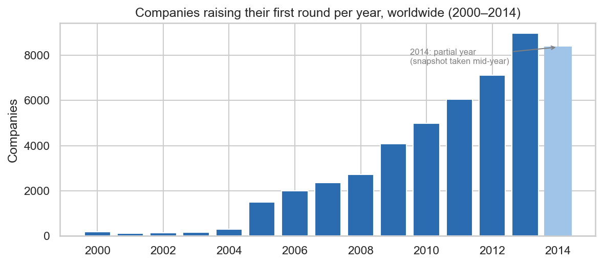
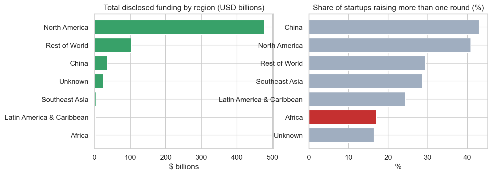
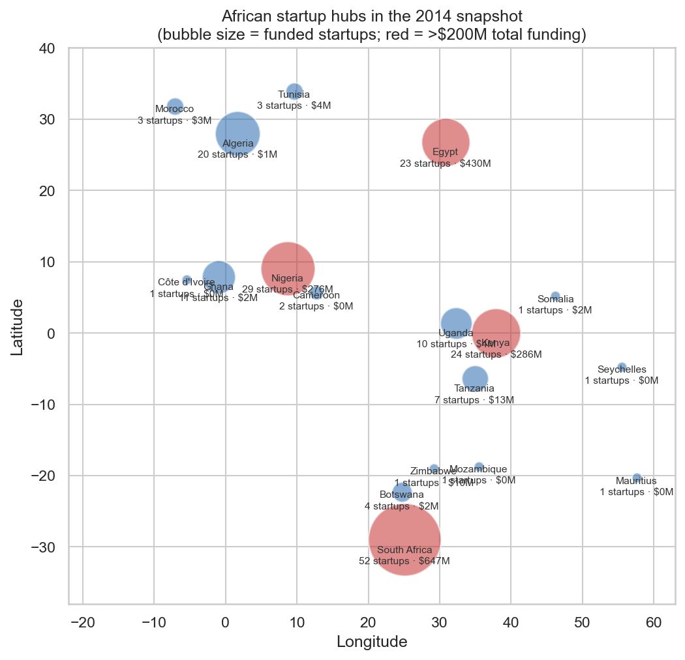
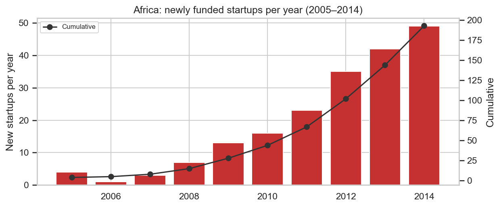
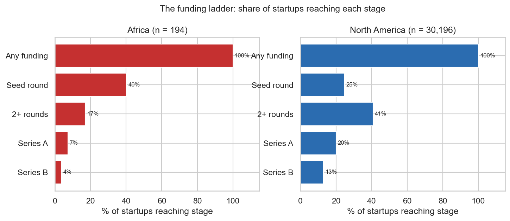
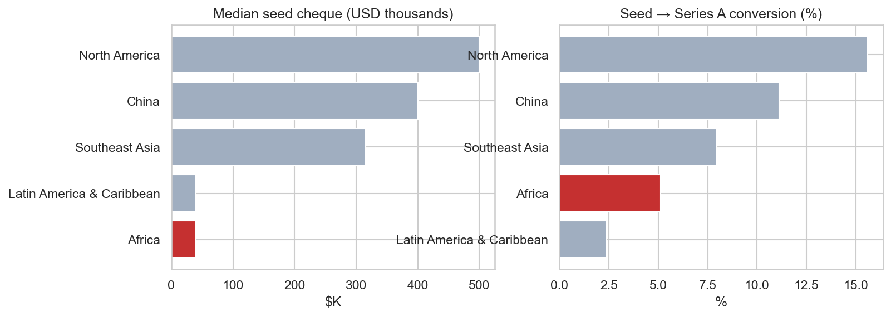
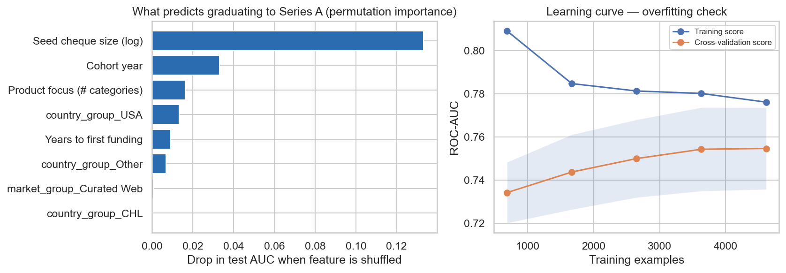

Executive summary
Africa's startup funding problem in 2014 was not a shortage of startups. It was a broken funding ladder. This report analyses a global dataset of 49,436 venture backed companies (funding activity recorded to late 2014) to establish an evidence based baseline of the African startup ecosystem and extract transferable lessons from four benchmark regions: North America, China, Southeast Asia and Latin America. The analysis finds that African startups were funded quickly and in growing numbers but almost never funded twice.
The numbers define the diagnosis precisely. Of the 194 African startups in the dataset ($1.68 billion of lifetime funding), the median seed cheque was just $40,000, against $315,000 in Southeast Asia and $500,000 in North America. Only 5.1% of seed funded African startups ever reached Series A (North America: 15.6%), only 17% ever raised a second round of any kind and just 1% achieved an exit through acquisition. Debt financing was used by fewer than 5% of companies.
Machine learning converts the diagnosis into predictive evidence. A random forest model trained on 7,686 seed funded startups worldwide (test AUC 0.74, validated against overfitting with backtests, cross validation and learning curves) identifies the size of the seed cheque as the single strongest predictor of graduating to Series A, stronger than geography or sector. Africa's constraint, in other words, is capital structure, which is fixable, rather than geography, which is not.
Seven recommendations follow directly from the cross regional evidence. These include recapitalising the seed stage toward the $300,000 to $500,000 range, building dedicated Series A follow on capacity, avoiding the Latin American small grant trap, investing through the four established hubs while underwriting regional scale, developing a venture debt rail and deliberately engineering exit pathways. Each is detailed in Section 6.
01Introduction and background
Investors allocating capital to African startups have long operated with more conviction than evidence. By 2014, global startup databases had accumulated detailed funding histories for tens of thousands of companies, yet systematic comparisons of Africa against other emerging venture ecosystems remained rare. This report closes that gap: it treats the African record not as an isolated story but as one region inside a global dataset, so that every African number can be benchmarked against a like for like figure elsewhere.
The 2014 snapshot is an ideal diagnostic baseline precisely because it predates the boom. The dataset captures the ecosystem before the mega rounds, unicorns and international headlines of the late 2010s. Whatever structural strengths and weaknesses it reveals are foundational characteristics, not artefacts of a hype cycle. Two companion reports build on this baseline: Report 2 measures what changed between 2014 and 2026 and Report 3 projects scenarios to 2030.
The intended audience is practitioners who deploy capital, not academics. The report is written for fund managers, angels, development finance institutions (DFIs) and ecosystem builders operating in African markets. Analytical choices favour decision relevance: medians over means (funding data is extremely skewed), conversion rates over totals and explicit validation of every model.
02Objectives and research questions
The report pursues four objectives, each mapped to a research question. First, to characterise the African startup funding landscape as of 2014: who gets funded, where, in what sectors and with what instruments? Second, to benchmark Africa against North America, China, Southeast Asia and Latin America on identical metrics. Third, to identify, using machine learning on the global sample, which factors observable at seed stage predict graduation to Series A. Fourth, to translate the evidence into an actionable playbook for investors refining their African investment strategies.
03Data and methodology
3.1 Dataset
The analysis uses a Crunchbase derived global snapshot of 49,436 venture backed companies. Each record contains the company's location (ISO 3166 alpha 3 country code), sector, funding total, funding round history (seed through Series H, plus debt, grants and other instruments), founding and funding dates and operating status. After cleaning, the dataset spans first funding events from the early 1990s to December 2014, with meaningful volumes from 2005 onward; the 2014 year is partial because the snapshot was taken mid year.
3.2 Cleaning and preparation
Six documented cleaning steps were applied before any analysis: (1) normalising corrupted column names; (2) converting funding amounts stored as formatted text into numeric values, with unknown amounts kept explicitly as missing rather than zero; (3) parsing all dates into true datetime values and treating the data as a time series; (4) removing duplicate company records; (5) mapping every alpha 3 country code to its official ISO country name (including the legacy code ROM for Romania); and (6) assigning each company to a world region, with Southeast Asia defined as its full eleven countries (Brunei, Cambodia, East Timor, Indonesia, Laos, Malaysia, Myanmar, Philippines, Singapore, Thailand, Vietnam), North America as the United States and Canada and Africa as all 54 African states.
3.3 Analytical methods
The analysis combines descriptive trend analysis, cross regional benchmarking and supervised and unsupervised machine learning. Descriptive work uses cohort analysis by first funding year and funnel analysis across funding stages. The predictive model is a random forest classifier estimating the probability that a seed funded startup reaches Series A, trained only on features knowable at seed time to prevent data leakage, restricted to companies first funded by 2012 to mitigate right censoring and evaluated with held out test data, five fold cross validation and learning curves. A K Means segmentation groups companies by funding profile. Full technical specifications are provided in Annexure B.
3.4 Data protection and ethics
The analysis processes no personal data and infringes no data protection laws. All records are aggregated, publicly disclosed, company level funding information; no personally identifiable information about founders, employees or investors was collected, processed or stored. The approach is consistent with the principles of Kenya's Data Protection Act (2019) and the EU GDPR. A full statement appears in Annexure C.
04Findings and analysis
All analysis in this section was designed and conducted by Michael Omega, using Python (pandas, scikit learn, matplotlib, seaborn, plotly) on the cleaned dataset described in Section 3. Reproducible notebooks are available alongside this report.
4.1 The global landscape: where startup capital lived in 2014
Global venture activity grew almost tenfold between 2004 and 2013 and the wave lifted every region. Companies raising their first round grew from under 300 per year in the early 2000s to nearly 9,000 by 2013. The 2014 figure dips only because the snapshot was taken mid year. Africa's ecosystem emerged inside this rising tide rather than against it.

Capital, however, remained extraordinarily concentrated and follow on funding divided the world into two tiers. North America absorbed roughly $478 billion of the roughly $540 billion of disclosed funding, with Africa at $1.7 billion: 0.4% of companies and well under 1% of capital. The metric that matters more than totals is the share of startups that ever raise a second round. North America converts about 41% of funded startups into repeat funded companies; Africa converts 17%. That single contrast previews the report's core finding.

4.2 The African ecosystem: young, fast, concentrated
African startup funding in 2014 was concentrated in four hubs that accounted for two thirds of companies and virtually all capital. South Africa ($647M of lifetime funding across 52 companies), Egypt ($430M), Kenya ($286M) and Nigeria ($276M), the Big Four, held 66% of companies and roughly 97% of disclosed funding. The remaining activity was scattered across fourteen countries, most with fewer than a dozen funded startups each.

The ecosystem was young and accelerating: newly funded startups quadrupled in five years, from 13 in 2009 to 49 in 2014 and the 2014 figure is undercounted because of the mid year snapshot. Capital also arrived unusually fast: the median African startup raised its first round 1.1 years after founding, quicker than the United States (1.9 years) or China (2.9 years). Whatever was wrong with African startup finance, it was not a lack of early investor appetite.

4.3 The broken funding ladder
The defining pathology of the 2014 African ecosystem was graduation failure: startups were funded once and then stranded. In Africa, 40% of startups raised a seed round but only 7% ever reached Series A and 4% Series B; in North America the equivalent figures were 20% and 13% from a far larger base, with 41% of all startups raising multiple rounds. Expressed as a conversion rate, only 5.1% of seed funded African startups graduated to Series A, versus 15.6% in North America and 11.1% in China.

Behind the broken ladder sat a structural cause: African seed cheques were an order of magnitude too small. The median seed cheque by region was $40,000 in Africa against $315,000 in Southeast Asia and $500,000 in North America. A $40,000 seed buys a pilot, not the 18 months of runway needed to generate Series A evidence. The consequence, the seed to Series A conversion rate, is where Africa's 5.1% sits far below the mature markets, above only Latin America (2.4%), whose grant driven model Section 5 examines as a cautionary tale.

4.4 Regional benchmarking
Measured on identical metrics, each benchmark region reveals a distinct capital market design and a distinct lesson. North America pairs meaningful seed cheques with deep follow on capital and a working exit market (9.8% of startups acquired). China shows a venture first model: only 4% of startups raise seed rounds, but two thirds raise large institutional rounds (median company raises $10M) after proving themselves for nearly three years. Southeast Asia, structurally the closest analogue to Africa, built a working ladder around Singapore as a regional hub. Latin America generated impressive startup counts through cheap, standardised seed grants but recorded the worst graduation rate in the dataset.
Table 1: Cross regional comparison of key funding metrics (2014 snapshot).
| Metric | Africa | SE Asia | China | N. America | LatAm & Car. |
|---|---|---|---|---|---|
| Funded startups | 194 | 505 | 1,239 | 30,196 | 916 |
| Total funding | $1.7B | $3.9B | $35.6B | $477.9B | $3.1B |
| Median total raise | $200K | $650K | $10.0M | $2.8M | $51K |
| Median seed cheque | $40K | $315K | $400K | $500K | $40K |
| Seed to Series A | 5.1% | 8.0% | 11.1% | 15.6% | 2.4% |
| Raising 2+ rounds | 17% | 29% | 43% | 41% | 24% |
| Using debt financing | 4.6% | 1.4% | 0.8% | 12.8% | 0.9% |
| Acquired (exits) | 1.1% | 2.0% | 2.0% | 9.8% | 2.0% |
| Median yrs to 1st funding | 1.1 | 1.4 | 2.9 | 1.9 | 0.9 |
4.5 Machine learning: what actually predicts graduation
A supervised model trained on 7,686 seed funded startups worldwide identifies seed cheque size as the strongest predictor of reaching Series A. Permutation importance measured on held out test data shows that shuffling the seed amount feature degrades the model more than shuffling any other feature, ahead of timing variables and far ahead of country or sector. This converts the descriptive finding of Section 4.3 into predictive evidence: Africa's $40,000 median seed is, statistically, the profile of a non graduate, independent of the startup being African.
The model was explicitly validated against overfitting and data leakage; readers should treat those checks as part of the finding. Features that mechanically contain the outcome (total funding, round counts) were excluded; the cohort was limited to startups first funded by 2012 so every company had at least two years to convert (avoiding right censoring); and class imbalance (17.1% positive) was handled with balanced class weights. The learning curve shows training and cross validation scores converging as data grows, with a final train test gap of 0.04: the model generalises (test AUC 0.74; five fold cross validation 0.755 plus or minus 0.019). A complementary K Means segmentation found that 47% of African startups occupy a pure seed micro funding profile whose worldwide Series A rate is approximately zero, while 82% of Chinese startups occupy venture track profiles with 34% to 54% Series A rates.

05Discussion: what Africa can borrow
The regional evidence resolves into seven transferable lessons, each anchored to a specific number in this dataset. The most important interpretive point is that the lessons are complementary, not alternative: North America demonstrates that follow on capital and exits, not first cheques, make an ecosystem compound; China demonstrates the power of concentrated, later bets on proven traction; Southeast Asia demonstrates how a hub plus region model lets small markets produce big companies; and Latin America demonstrates, negatively, that manufacturing startup counts with small standardised cheques creates a valley of death unless follow on capital is reserved in advance.
Table 2: Seven lessons for African investors, with their source region and supporting evidence.
| # | Lesson | Borrowed from | Evidence |
|---|---|---|---|
| 1 | Write fewer, larger seed cheques (or syndicate) | N. America / SE Asia | Median seed: Africa $40K vs SEA $315K vs NA $500K |
| 2 | Reserve follow on capital for every seed dollar | N. America | Seed to A: Africa 5.1% vs NA 15.6% |
| 3 | Do not clone grant factories without a ladder behind them | Latin America (warning) | LatAm: 68% seeded, 2.4% reach Series A, worst in dataset |
| 4 | Back the hubs, underwrite regional scale | Southeast Asia | Singapore about 59% of SEA deal flow; Big Four = 66% of African startups |
| 5 | Make concentrated, later bets on proven traction | China | China: median raise $10M; 43% raise 2+ rounds; first raise at about 2.9 yrs |
| 6 | Develop the venture debt rail | N. America | Debt usage: NA 12.8% vs Africa 4.6% |
| 7 | Engineer exit pathways deliberately | N. America | Acquired: NA 9.8% vs Africa 1.1% |
The machine learning result reframes Africa's position more optimistically than the raw numbers suggest. Geography and sector carried far less predictive weight than capital structure. An African startup capitalised like a North American one has, on the evidence of this model, a materially normal chance of graduating. The constraint investors can fix, cheque size, follow on reserves, instrument mix, is precisely the constraint that matters most. That is an unusual and encouraging alignment.
06Recommendations
- Recapitalise the seed stage.
Move African seed rounds from the $40,000 range toward $300,000 to $500,000 through syndication, co investment vehicles and DFI matching facilities. The predictive model identifies this as the highest leverage intervention available to investors.
- Build dedicated Series A capacity and hold follow on reserves.
With a 5.1% seed to A conversion, the missing middle is the ecosystem's binding constraint. Funds should reserve 50% or more of committed capital for follow on; ecosystem builders should recruit Series A stage funds rather than additional accelerators.
- Avoid the Latin American trap.
Mass small grant programmes without committed growth capital behind them produced the dataset's worst graduation rate (2.4%). Every entry point programme should be paired with reserved follow on capacity before launch.
- Invest through the hubs while underwriting regional scale.
The Big Four already concentrate two thirds of deal flow; the Singapore and ASEAN model shows hub concentration plus deliberate cross border expansion is how small markets produce large companies.
- Introduce venture debt and alternative instruments.
Debt financing reached 12.8% of North American startups but under 5% of African ones; venture debt extends runway between equity rounds without punitive dilution.
- Manufacture exit pathways.
With 1% M&A activity, early capital cannot recycle. Investors should cultivate corporate acquirers, enable secondary sales and press for cross border listing pathways.
- Screen on capital structure signals first.
In diligence and portfolio triage, weight cheque size, round cadence and instrument mix above geography and sector: the model shows they carry the most predictive power.
07Limitations
- Coverage bias understates Africa. Crunchbase derived data under records African deals, informal rounds and undisclosed amounts; African absolute figures should be read as floors, not truths.
- The snapshot ends in 2014 and 17% of funding totals are missing. Findings describe the structural baseline, not the current market (Report 2 addresses 2015 to 2026). Survivorship and disclosure bias under represent failed companies and undisclosed rounds.
- Correlation is not causation. Larger seeds predict graduation, but stronger teams may simply raise larger seeds; both mechanisms are plausibly true and both argue for the same investor behaviour. Amounts are nominal USD without inflation adjustment.
08Conclusion
So what should an investor do differently after reading this report? Fund the ladder, not just the first rung. The 2014 evidence shows an African ecosystem that was young, fast growing, concentrated in four workable hubs and focused on globally relevant sectors, but systematically under capitalised at seed and abandoned before Series A. Every benchmark region that escaped this trap did so by making follow on capital, larger cheques, alternative instruments or exits, the machinery behind the first cheque, the centre of its capital market design. The predictive model's verdict is the report's final word: Africa's constraint is how its startups are capitalised, not where they are. That constraint is investable.
AAnnexure A: Data dictionary (key analytical fields)
| Field | Description |
|---|---|
| funding_total_usd | Total disclosed lifetime funding (USD), parsed from formatted text |
| country_code / country_name | ISO 3166 alpha 3 code and official country name (via pycountry) |
| region_group | Analytical region: Africa, Southeast Asia, China, North America, Latin America and Caribbean, Rest of World |
| first/last_funding_at | Dates of first and last recorded funding rounds (datetime) |
| years_to_first_funding | Years between founding and first funding (data errors set to missing) |
| seed, venture, debt_financing, grant | Amounts raised by instrument (USD) |
| round_A to round_H | Amounts raised in named rounds (USD) |
| reached_series_a / _b | Flags for graduating to Series A or B |
| is_multi_round | Flag for raising two or more rounds |
BAnnexure B: Model specifications and validation
Classifier. Random forest, 300 trees, minimum 50 samples per leaf, balanced class weights, random seed 42. Cohort: 7,686 seed funded companies first funded by 2012 or earlier; positive class (reached Series A): 17.1%. Features: log seed amount, product category count, years to first funding, cohort year, sector group (top 15), country group (top 12). Leakage controls: all outcome bearing fields excluded. Results: test ROC AUC 0.740; train 0.778 (gap 0.038); five fold CV 0.755 plus or minus 0.019. Permutation importance computed on the test set with 10 repeats.
Segmentation. K Means (k=5, selected by silhouette score 0.499) on standardised funding profile features: log total funding, round count and seed, venture and debt funding shares. Cluster profiles and regional mixes are reported in the companion notebook.